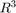
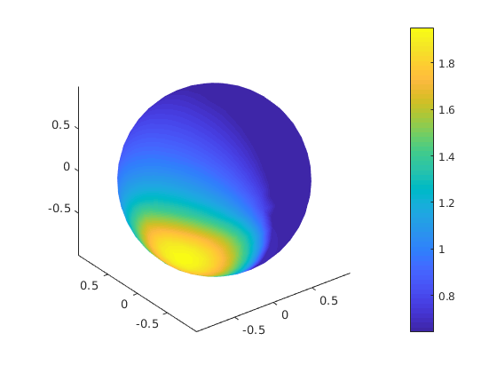
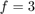
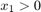
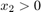
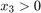
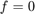
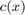
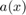

Elliptic PDE in 
Define a function. Since we want to use local functions, we cannot use a MATLAB script but is it necessary to write a driver (main) function. Most of the code is identically with run_elliptic2D, exept market with (*).
function run_elliptic3D()
Call the Elliptic constructor
elliptic = Elliptic();
(*) Assign a Ball (3D) object to grid property
We use h = 0.125. Its better to create a sufficiently fine mesh by the contructor instead to refine it later. Try
elliptic.grid = Ball(.25); elliptic.grid.refineUniformly(1);
to see the difference.
elliptic.grid = Ball(.125);
(*) Assign Lagrange13D fem class with fem property
elliptic.fem = Lagrange13D();
Same as in 2D. Set boundary condition
elliptic.setBoundaryConditions('Neumann','0');
(*) Call initialize. To make the problem more interesting, we chose now parameters given by functions: c = c(x), a = a(x) and source f = f(x). Use function-handles to give the parameters to initialize.
elliptic.initialize(@c,@a,@f);
Solve linear proeblem. Use 'LINEARGAUSS'. Try also 'LINEAR', and Algebraic multigrid solver by 'AMG'. Note that AMG needs Ilupack installed.
elliptic.solve('LINEARGAUSS');
User defined solver: LINEARGAUSS Re-order matrix using reverse Cuthill-McKee reordering ... done. Solve using mldivide ... done. Spend 0.027622 seconds for solving pde problem.
Plot the result. Since the mesh is rather fine, we use "LineStyle" = 'none' to supress printing the black edges of the triangles.
elliptic.plot('LineStyle','none');
end
(*) Coefficient function f and c defined by local functions. The source f is  if ,  and , otherwise  in the "positive". The functions  and  impelements a Ball made of two components with different material properties.
function val = f(x1,x2,x3) val = 3*ones(1,length(x1)); val(x1>0) = 0; val(x2>0) = 0; val(x3>0) = 0; end function val = c(x1,~,~) val = 0.3*ones(1,length(x1)); val(x1>0) = 30; end function val = a(x1,~,~) val = 0.1*ones(1,length(x1)); val(x1>0) = 1; end